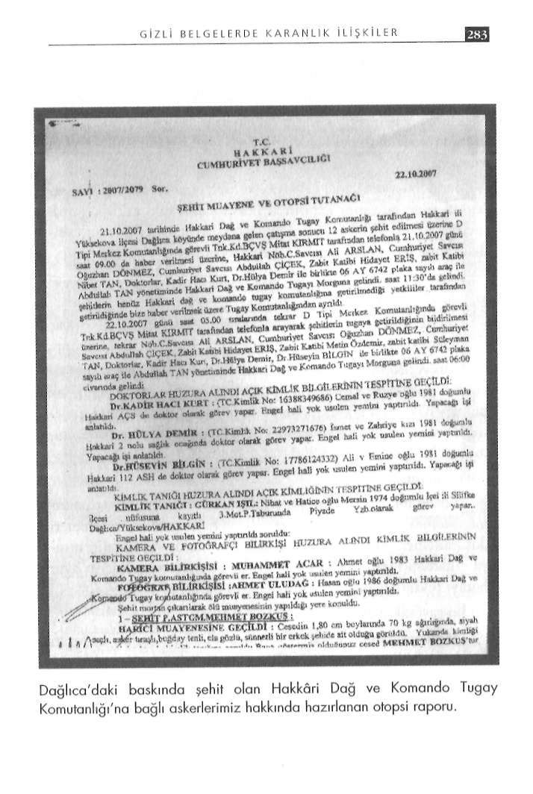

G İ Z L İ B E L G E L E R D E K A R A N L I K İ L İ Ş K İ L E R
davet edip açıklamalar yaptı. Sorulardan biri şuydu: 'Dağlıca'da bulundu. 8 ere ilave olarak Dağlıca Tabur Komutanı Yarbay köstebek var mı?'
Onur Dirik, Bölük Komutanı Yüzbaşı Gürkan Işıl ve operasyon
PKK'nın kaçırdığı askerlerden bir veya bir kaçının köstebek da yer alan Üsteğmen Çağdaş Cücünoğlu'ndan şikâyetçi oldu.
olduğu iddialarına cevap aranıyordu. Büyükanıt şöyle dedi: "Ba
Gürdal, şehit düşen kardeşi Selçuk'un böbrek hastası olduğuna gelen böyle bir bilgi yok." Ne zaman söyledi bunu? 9 Kanu, Van Askeri Hastanesi'nden rapor aldığını ve yakında emeklisım'da. Dağlıca saldırısından 19 gün, 8 askerin Türkiye'ye iade liğe hazırlandığını belirterek, dilekçesinde şu görüşlere yer verdi: edildiği tarihten 5 gün sonra. Dağlıca Tabur Komutanı'nın er
"Dağlıca'da şu anda görev yapan Topçu Kurmay Yarbay Onur Ramazan Yüce'yi suçladığı tarih ne zaman? 24 Kasım. Saldırıdan Dirik tabur komutanı, Yüzbaşı Gürkan Işıl bölük komutanından 34 gün, 8 askerin iadesinden 20 gün, Büyükanıt'ın açıklamasıngörevlerini suistimal ettikleri ve kardeşime hasta olmasına rağdan 15 gün sonra.
men bu operasyonda görev verdikleri için ve o 8 vatan haininin Diğer bölümlerde aktardığım gibi; Dağlıca mevzuuna ilk sorgeçmiş istihbaratlarını araştırmadıkları, ellerine silah verip tiyi '200 terörist sınırdan nasıl sızdı?' başlıklı yazıyla 22 Ekim'de önemli görevlerde bulundurdukları için şikâyetçiyim."
yaptık. '8 asker kaçırıldı mı, teslim mi oldu?' başlıklı yazım da 24
Şehit kardeşinin, dilekçenin son kısmına eklediği bir şikâye
Ekim'de yayınlandı.
ti daha vardı ki, insanın kanını donduracak türdendi: Soru şu: Tüm bu uyanlara rağmen aradan geçen 19 günlük
"Bu operasyonda yer alan Piyade Üsteğmen Çağdaş Cücüsüre içinde köstebek bilgisine ulaşılamadı mı? Dağlıca Tabur Konoğlu'ndan operasyonda bulunmasına rağmen operasyon bitene mutanı Yarbay Onur Dirik'in ifadelerine bakılırsa, bu soruya kadar mevzisinde yattığı ve hiçbir şekilde olaya müdahale etme
'evet' denemez.
diği için şikâyetçiyim."
O halde, Büyükanıt'ı kim yanılttı? Genelkurmay'ın Dağlıca Bu ifade üzerine, hakkında 3 yıldan 5 yıla kadar hapis cezası açıklamasına bir de bu gözle bakılmasında yarar var.
istenen Çavuş Mehmet Şenkul'un babası Ali Şenkul'un 'Çatışmadan kaçanlar kahraman oldu, 3 saat çatışan oğlum şimdi ha
Komutanlara suç duyurusu
pishanede' sözleri geldi aklıma.
Dağlıca'daki 3 komutanın yanı sıra şikâyetçi olduğu 8 asker
Celalettin Gürdal...
den 6'sının (İrfan Beyaz, Ramazan Yüce, Mehmet Şenkul, Fuat Dağlıca'da şehit düşen piyade uzman çavuş Selçuk Gürdal'm Başoda, líhami Demir, Halis Can) DTP Gençlik Kolları üyesi ikiz kardeşi. Dağlıca'da canının yarısını kaybetti. Dağlıca baskıolduğunu iddia eden Celalettin Gürdal, bu askerlerle irtibatlı olnıyla ilgili her gelişmeyi yakından takip etti. Hakkâri ve Van duğunu iddia ettiği korucular ldris Seven, Cemal Demir, Burhan arasında mekik dokudu, Ankara'da Genelkurmay'ın kapısını Ediş, Tayip Ecer, Hacı Çetin ve Enver Demir ile askerlerin kur
çaldı. 8 askerle ilgili soruşturma sürecini yakından izledi. Kardetarılmasına aracılık eden DTP'li Ahmet Türk (şifahi olarak), şinin silah arkadaşlarıyla tek tek görüştü.
Osman Özçelik, Aysel Tuğluk ve Fatma Kurtulan hakkında da Hiçbir cevap, ona yetmedi. Kafası, soru işaretleriyle doluydu.
suç duyurusunda bulundu.
Yargılanan sanık askerlerin yanı sıra, 3 Aralık 2007 günü An
Suç duyurusu bana ulaşınca iddia sahibi Gürdal'ı aradım. Tetalya Kemer Başsavcılığına bir dilekçe vererek, suç duyurusunda lefonla uzun bir görüşmemiz oldu. "Bu davanın peşini bırakma-
